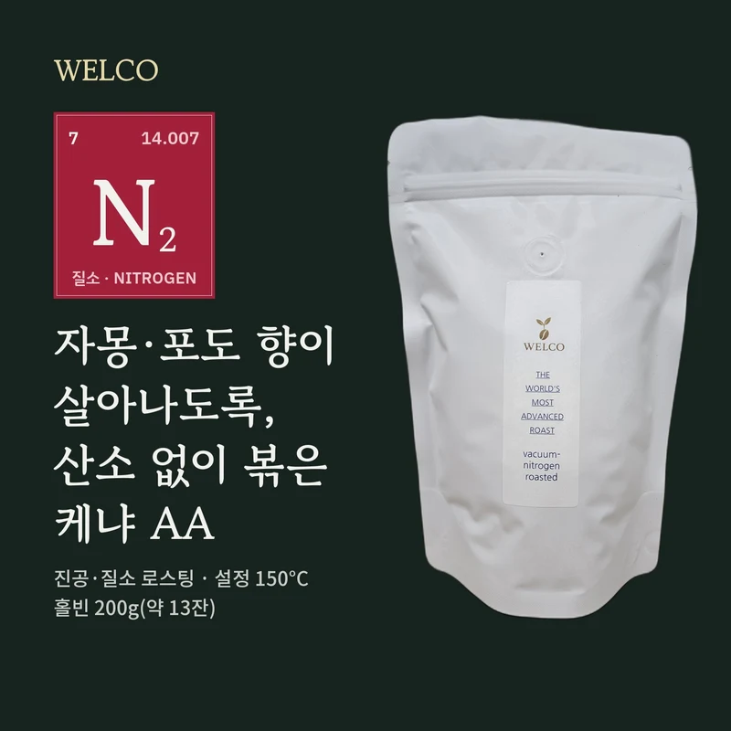

시다모 G2 워시드
에티오피아
재스민 · 레몬·베리 · 홍차
꽃향과 상큼함, 가벼운 블랙커피
경북 고령의 WELCO 로스터리에서, 볶는 통의 공기를 먼저 빼고 질소를 채운 뒤 볶습니다. 에티오피아 · 케냐 AA · 콜롬비아. 산지의 향이 그대로 오도록 볶은 홀빈 200g입니다.

공기 속에서 볶으면 산소 때문에 원두 껍질이 그을릴 수 있고, 그을음은 커피 향을 가릴 수 있습니다. 그래서 WELCO는 볶는 통의 공기를 먼저 빼고, 질소를 채운 뒤 설정 150°C로 볶습니다. 세 원두 모두 같은 로스터에서 같은 순서로 볶아, 산지의 차이만 남깁니다.
등록특허는 질소로 산소를 없앤 분위기에서 볶는 방법에 관한 것이고, 진공 단계와 150°C 설정은 WELCO가 정한 공정입니다. 자세한 그림과 근거는 원두 상세 페이지에 있습니다.

모두 홀빈 200g입니다. 맛 지도와 추출법은 원두별 상세에서 볼 수 있습니다.
시다모 G2 워시드
재스민 · 레몬·베리 · 홍차
꽃향과 상큼함, 가벼운 블랙커피

AA
자몽·포도 · 황설탕·아몬드
밝은 산미와 고소한 단맛을 함께

후일라 수프리모 17/18 워시드
시트러스 · 사탕수수 · 밀크 초콜릿
단맛이 앞에 오는 한 잔, 라떼까지
향미는 WELCO가 볶을 때 목표로 하는 맛을 비유한 것이며, 실제 재료는 들어 있지 않습니다.
맛 세기는 5단계 기준으로 WELCO가 맞춘 목표값입니다. 산미는 개인차가 큰 영역입니다.
원두를 직접 볶고 파는 WELCO가 네이버 블로그에 쓴 일곱 편의 연재입니다.
홀빈(통원두) 상품이라 분쇄가 필요합니다. 분쇄된 가루는 판매하지 않습니다. 선물하실 때도 받는 분께 그라인더가 있는지 먼저 확인해 주세요.
아닙니다. 등록특허 제10-2004953호는 질소로 산소를 없앤 분위기에서 볶는 방법입니다. 질소를 채우기 전에 공기를 빼는 진공 단계와 설정 150°C는 WELCO가 정한 자체 공정입니다.
핸드드립 한 잔에 원두 15g이면 200g 한 봉으로 약 13잔입니다. 하루 한 잔이면 약 2주 분량입니다. 원두별 추출법은 원두 상세에 있습니다.
카페 사장님이신가요? 원두 샘플 · 납품 문의 — 샘플 신청 메일 쓰기 · 전화 070-7700-7891